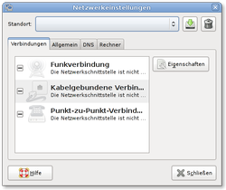

Network Administration Tool
Archivierte Anleitung
Dieser Artikel wurde archiviert, da er - oder Teile daraus - nur noch unter einer älteren Ubuntu-Version nutzbar ist. Diese Anleitung wird vom Wiki-Team weder auf Richtigkeit überprüft noch anderweitig gepflegt. Zusätzlich wurde der Artikel für weitere Änderungen gesperrt.
Zum Verständnis dieses Artikels sind folgende Seiten hilfreich:
Dieser Artikel beschreibt die Verwaltung von Netzwerk-Schnittstellen (Interfaces) mit dem grafischen Network Administration Tool  (Netzwerk-Verwaltungswerkzeug), das nur für GNOME erhältlich ist. Dieses Werkzeug dient dazu, die für die Einrichtung und Konfiguration eines Netzwerks nötigen Einträge in den entsprechenden Systemdateien (vor allem /etc/network/interfaces und /etc/hosts) vorzunehmen oder zu verändern, ohne dass man diese in einem Terminal zu bearbeiten braucht. Daneben bietet das Tool auch einen einfachen Roaming-Modus.
(Netzwerk-Verwaltungswerkzeug), das nur für GNOME erhältlich ist. Dieses Werkzeug dient dazu, die für die Einrichtung und Konfiguration eines Netzwerks nötigen Einträge in den entsprechenden Systemdateien (vor allem /etc/network/interfaces und /etc/hosts) vorzunehmen oder zu verändern, ohne dass man diese in einem Terminal zu bearbeiten braucht. Daneben bietet das Tool auch einen einfachen Roaming-Modus.
Grundlagen¶
Network Manager als Standard¶
Früher war das "Network Administration Tool" in Ubuntu das Standardwerkzeug zur Verwaltung von Netzwerkverbindungen. Mit der Version 0.7 wurde allerdings die Funktionalität des Network Managers (NM) erweitert, so dass nahezu alle Netzwerk-Einstellungen auch über diesen vorgenommen werden können. Ideal ist der NM bei ständig wechselnden (WLAN-)Netzwerkverbindungen. Frühere Nachteile des NM (z.B. keine feste IP möglich) gehören ebenfalls der Vergangenheit an.
Der NM ist einfach zu konfigurieren und arbeitet nahezu transparent. Deshalb werden seit Ubuntu 8.10 Intrepid Ibex alle Netzwerke (Kabel oder WLAN) standardmäßig mit dem NM eingerichtet. Eine beliebte Alternative zum NM ist nach wie vor auch Wicd.
Sowohl der NM als auch Wicd haben eigene Konfigurationsdateien und verwenden deshalb die Datei /etc/network/interfaces nicht.
Wozu also "Network Administration Tool"?¶
Trotz der Vorteile von NM und Wicd kann in einigen Fällen die Konfiguration des Netzwerks mit dem Administration Tool vorteilhaft sein:
Sowohl NM als auch Wicd werden erst nach der Anmeldung des jeweiligen Benutzers (also recht spät) gestartet. Sollen beispielsweise Freigaben durch einen Eintrag in /etc/fstab systemweit fest ins Dateisystem des Client eingebunden werden, steht dann zu diesen Zeitpunkt das Netzwerk noch nicht zur Verfügung.
Beim Benutzerwechsel hängen die Einstellungen u.U. vom vorhergehenden Benutzer ab
Beim Herunterfahren wird die Boot-Reihenfolge umgekehrt durchlaufen. Beim Herunterfahren (shutdown) oder Neustart (reboot) können dann Probleme auftreten, wenn das Netzwerk bereits vor dem Aushängen der Netzwerk-Dateisysteme (cifs, NFS) beendet wird.
Einige Befehle, die zum Linux-Standard zählen (z.B. ifup, ifdown, networking.restart u.a.) sind nur für Netzwerke wirksam, die über /etc/network/interfaces konfiguriert sind. Dies ist vor allem bei skript- oder zeitgesteuerten Netzwerk-Verbindungen zu beachten.
Experten-Info:
Fazit: bei stationären Desktop-PCs im lokalen Kabel-Netzwerk ist der Network Manager prinzipiell überflüssig. Dies gilt auch für Server, wobei diese allerdings im Regelfall ohne grafische Oberfläche über die Datei /etc/network/interfaces eingerichtet werden.
Ihre Vorteile spielen die genannten Manager dagegen bei mobilen Geräten mit ständig wechselndem Internet-Zugang und bei WLAN (hier u.a. durch die bequeme grafische Konfiguration der Verschlüsselung) aus.
Installation¶
Das Network Administration Tool für GNOME ist im Paket
gnome-network-admin (universe)
 mit apturl
mit apturl
Paketliste zum Kopieren:
sudo apt-get install gnome-network-admin
sudo aptitude install gnome-network-admin
enthalten. Bis einschließlich Ubuntu 8.04 Hardy Heron gehörte dieses zur Standard-Ausstattung. Ab Ubuntu 8.10 Intrepid Ibex muss es aus den Paketquellen nachinstalliert [1] werden.
Achtung!
Das Programm wurde nicht ohne Hintergrund aus der Standardinstallation verbannt: es enthielt diverse Fehler. Erst mit Ubuntu 10.10 Maverick Meerkat scheint sich diese Situation gebessert zu haben.
Nach der Installation des Pakets befindet sich im Hauptmenü der Eintrag
"System -> Systemverwaltung -> Netzwerk"
Wählt man diesen an, erscheint ein Dialogfenster mit der Überschrift "Netzwerkeinstellungen". Dieses hat zwar Ähnlichkeit mit dem Dialogfenster des Network Managers, hat mit diesem aber nichts zu tun.

Anwendung¶
Das Network Administration Tool besitzt eine ausführliche deutschsprachige Hilfedatei, sodass sich die Erklärungen hier auf das Wesentliche beschränken können. Grundsätzlich sind vier Angaben erforderlich:
IP-Adresse
Netmask
Gateway
DNS-Server (häufig ist das wiederum das Gateway)
Details zur Konfiguration sind vom Einzelfall abhängig und im Artikel interfaces unter dem Abschnitt "Statische IP-Konfiguration" konkret beschrieben.
Network Manager deaktivieren¶
Das Network Administration Tool und der Network Manager (NM) beeinträchtigen sich gegenseitig. Möchte man sein Netzwerk mit dem Network Administration Tool (oder direkt durch Einträge in /etc/network/interfaces) konfigurieren, ist es deshalb wichtig, den NM zu deaktivieren. Hierzu wird das Häkchen in "System -> Einstellungen -> Startprogramme" entfernt und das System anschließend neu gestartet. Es ist nicht nötig, den NM zu deinstallieren. Das gleiche gilt auch für Wicd.
Network Manager wieder verwenden¶
Der NM verwaltet nur Schnittstellen, die nicht bereits durch einen Eintrag in der Datei /etc/network/interfaces konfiguriert sind. Deshalb müssen alle Einträge für Schnittstellen, die wieder vom NM verwaltet werden sollen, vorher wieder entfernt werden.
Vom Network Administration Tool vorgenommene Einträge für einzelne Schnittstellen werden am einfachsten gelöscht, indem man für diese Schnittstelle den "Roaming mode" aktiviert. Löscht man die Einträge, indem man die Datei im Terminal mit Root-Rechten editiert, muss man unbedingt darauf achten, dass dabei der Eintrag für lo, z.B.
auto lo iface lo inet loopback
unverändert erhalten bleibt!
Bei Wicd wird empfohlen, vorher alle Einträge für WLAN-Schnittstellen manuell aus /etc/network/interfaces zu löschen.
Links¶
interfaces - Bedeutung und Aufbau der Konfigurationsdatei /etc/network/interfaces
Network Manager (NM) - ab Version 0.7 (ab Ubuntu 8.10)
Wicd - Alternative zum Network Manager
- Erstellt mit Inyoka
-
 2004 – 2017 ubuntuusers.de • Einige Rechte vorbehalten
2004 – 2017 ubuntuusers.de • Einige Rechte vorbehalten
Lizenz • Kontakt • Datenschutz • Impressum • Serverstatus -
Serverhousing gespendet von